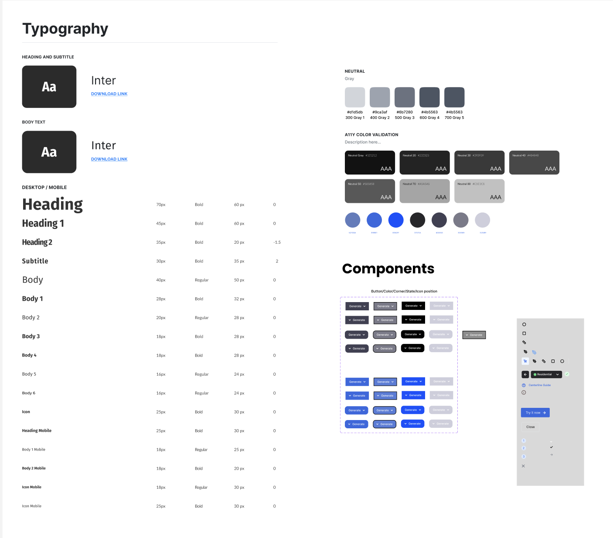

This wasn’t a bug. It wasn’t a missing feature. It was an onboarding failure — a domain-specific term presented to general users with no explanation, no guidance, and no way forward.
An AI tool that stopped users at the door
Finch 3D is an AI-powered architectural optimization platform. Architects input a building layout and the tool generates optimized structural variations — accelerating a process that previously required manual iteration over days or weeks.
But without a center line, the tool cannot function at all. Every user who couldn’t define one hit a complete wall — not friction, not confusion, but a hard stop. The onboarding failure was the product failure.
My Role
UX Researcher. I identified the onboarding failure through secondary research and competitive analysis, then designed the guided solution — showing users exactly how to select and connect points to define a center line.
Why users got stuck
Domain jargon as a blocker
“Center line” is an architectural term with a specific technical meaning. For non-specialists — or architects new to computational tools — it was meaningless, and the tool gave no definition.
No progressive guidance
The tool presented a blank canvas and a requirement. No step-by-step onboarding, no example, no visual cue showing what “selecting and connecting points” looked like.
No direct user research available
No user interviews were possible. The challenge required reading the problem from the tool itself, competitor analysis, and architectural domain knowledge.
Translating 3D thinking into a flat UI
Helping users grasp spatial, structural concepts through a flat interface meant turning 3D architectural thinking into clear, sequential steps anyone could follow.
From discovery to solution
Diagnose the tool
Opened and used Finch 3D as a first-time user, documenting every moment of confusion. The undocumented centerline requirement emerged immediately as the critical failure point.
Secondary research
With no interviews available, studied architectural software documentation, forum discussions, and reviews to reconstruct the typical user’s mental model when encountering “centerline.”
Competitive analysis
Analysed 5+ competing tools (Rhino, SketchUp, Revit) for how they handle domain-specific onboarding. The best tools showed examples before asking for input.
Wireframing the solution
Designed a step-by-step guided flow: define what a centerline is, show a visual example, prompt the user to click the first point, then connect points — with live validation at each step.
The guided flow I designed
Finch 3D provided no onboarding for the centerline requirement — the blank error state was all users saw. The redesign explains the term, shows the destination, and validates each step in real time.

A single dismissive toast: “Couldn’t find centerlines… Ensure that centerlines are set correctly.” No explanation, no example, no way forward.
A guided panel that defines the term, contrasts incorrect vs correct, and offers a clear next action — “Fix it for me” or “Show guide.”
Inside the guided experience


Three principles that guided every decision
Explain domain terms before demanding them. Define domain-specific language the moment it’s first encountered — in context, before the user needs to act on it.
Show the destination before asking for the journey. Users can’t give meaningful input until they see what the output looks like. Showing a completed center line first removed the biggest blocker.
Validate in real time, not at submission. Each step gave immediate visual feedback — the centerline appeared as points connected. Errors were visible and correctable without losing progress.
Outcome
Built to scale, not just to ship
The guided flow was built on a reusable foundation — defined typography, a neutral colour system with accessibility validation, and component variants in Figma — so the solution could extend consistently across the product.
